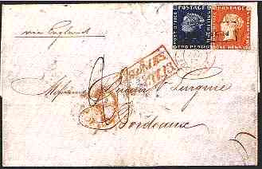
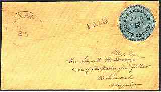

|
STAMP DEALERS & COLLECTORS After Neil S. Hawk · A sad commentary on dealer-collector relationships in 2002; it is necessary to note that the scenario of the little old lady, being robbed of her inheritance by a nefarious stamp or coin dealer, is an URBAN MYTH which belongs on that web site. A collector, once past the stage where EVERYONE has the stamps he seeks, and most buying decisions are price driven...needs good dealer relationships MUCH MORE than a dealer needs his business...once in the area of tougher stamps...dealing is much more WHO gets the gem rather than a matter of "HOW" or at what price to sell it!

There are criteria and degrees of experience that are required for membership in
the ASDA and PTS, so that membership suggests some degree of "expertise" in and
of itself. Stamp dealers form a VERY small fraternity (I exclude part time
eBayers, etc. here) and BAD news travels very quickly around the world, whether
about a member of the fraternity or a collector who is less than honest in his
dealings. This flow of information quickly roots out the genuine "bad apples" in
the hobby.
In another answer to a statement...I pointed out that this activity (deceiving less experienced collectors V.M) would be a felony in the US...theft by deception..."getting away with it" is hardly conceivable since finding/selling a rare stamp would attract the attention of at least the local media, who are always seeking local "human interest" stories to insert among the weather, sports and local crime news. Thus, the "yokel" or one of his/her friends would surely see the blurb complete with "film at 11" and call out the gendarmerie or their state's AG. (From a thread on rec.collecting.stamps.discuss, May 12, 2002)) Note: The discussion was prompted by the following posting: Let's suppose that one of you found in a shoe box, full of older stamps, a Mauritius 1847, Scott. No. 1, unused (value: over US$ 1,000,000). Let's also suppose that you already know for sure that you are in the possession of a genuine one.
 Which will be your intention: Victor Manta
|